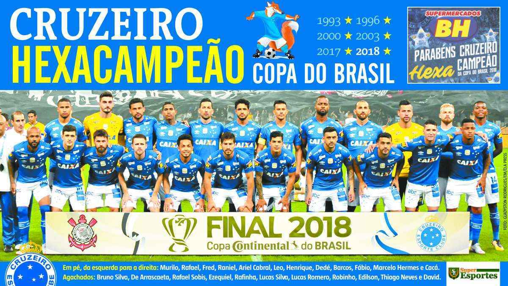

maiores artilheiros da copa do brasil
times que mais conquistaram a copa do brasil
atletico mineiro:2 conquistas
e tambem temos fluminense,vasco,santos,sport,internaacional,atletico paranaense,cricíuma,juventude,paulista e santo andré: todos com 1 conquista

agora veja quando o cruzeiro ganhou a copa do brasil pela sexta vez